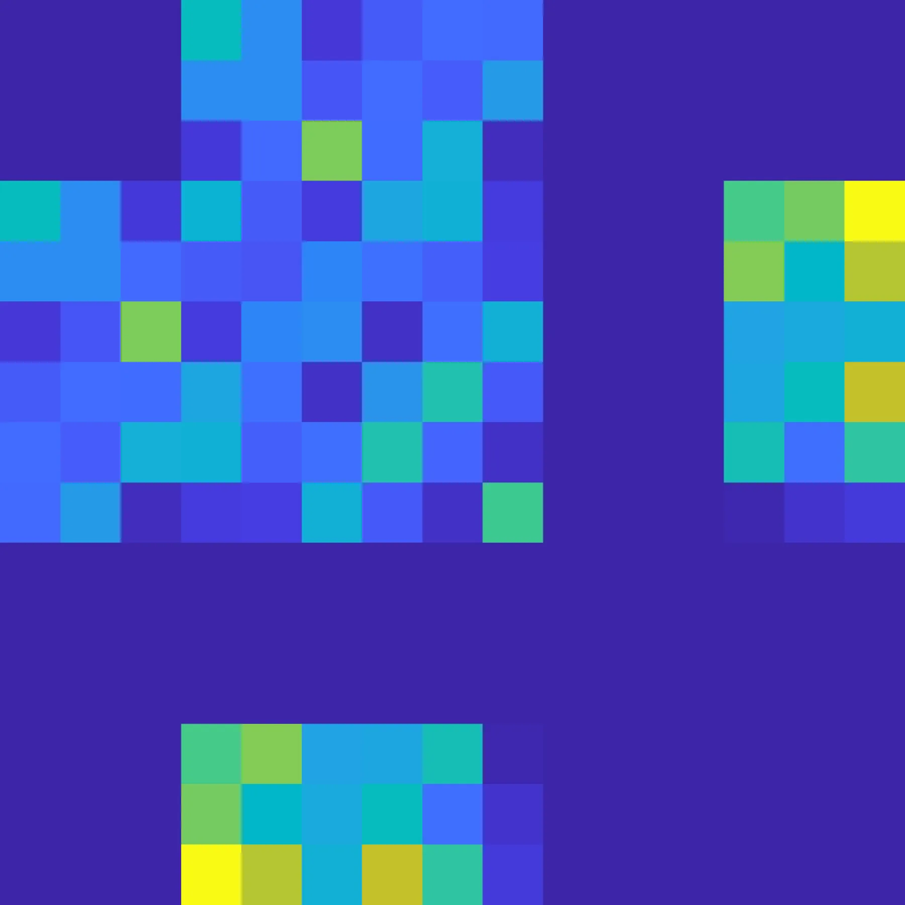

把 IMU 传播视为预积分IMU Propagation as Preintegration
虽然论文篇幅偏方法说明，但它直接服务于 VIO/LIO/GNSS-INS 因子图里的 IMU 因子工程一致性，实用价值高。
一句话工作总结
统一解释 IMU propagation 与 preintegration，帮助紧耦合 SLAM/GNSS-INS 后端复用和校验惯性因子实现。
摘要
本文指出，IMU 预积分和常规 IMU propagation 本质上是同一底层计算的两种实现方式。作者给出一种不依赖具体约定的视角：可以用已有 IMU propagation 例程包装得到预积分测量、偏置雅可比和协方差，也可以从预积分模块恢复状态转移矩阵和传播协方差。该观点有助于复用现有传播代码，减少视觉惯性、激光惯性、雷达惯性和 GNSS/INS 因子图实现中的约定不一致问题。
IMU preintegration is widely used in factor-graph-based visual--inertial, lidar--inertial, and radar--inertial state estimation, yet it is often treated as a specialized implementation separate from conventional IMU propagation. This note shows that IMU preintegration and propagation are equivalent realizations of the same underlying computation. We present a convention-agnostic view in which the preintegrated measurement, bias Jacobians, and covariance can be obtained by wrapping an existing IMU propagation routine, while a preintegration module can conversely recover state-transition matrices and propagated covariances. This perspective simplifies the reuse of existing propagation code, supports translation across different error-state definitions, and provides practical consistency checks for preintegration implementations. Experiments with random IMU sequences demonstrate close agreement between an RK4-based propagation implementation and GTSAM's tangent and manifold preintegration modules in the recovered Jacobians, covariances, and transition matrices.
中文解读摘录
- 日期：2026-05-27
- 链接：arXiv / PDF
- 作者简写：J. Huai
- 领域标签：SLAM / VIO / LIO / GNSS-SLAM 基础
- 背景/动机：IMU 预积分是视觉-惯性、激光-惯性、雷达-惯性与 GNSS/INS 因子图融合的核心模块，但工程上常与常规 IMU propagation 分开实现，容易出现约定、误差状态和协方差传播不一致。
- 主要创新点/工作：把 IMU propagation 与 preintegration 视为同一计算的两种实现；展示如何用已有传播器包装得到预积分量、bias Jacobian 和协方差，也能从预积分模块恢复状态转移矩阵和传播协方差；用随机 IMU 序列对比 RK4 propagation 与 GTSAM tangent/manifold preintegration。
- 为什么值得关注：对做紧耦合 VIO/LIO/GNSS-INS 的实现一致性很实用，可作为检查 GTSAM/自研预积分模块、误差状态定义转换和协方差传播的参考。
图表/页面预览

{kind=link}
{kind=link}

{kind=link}
{kind=link}
{kind=link}